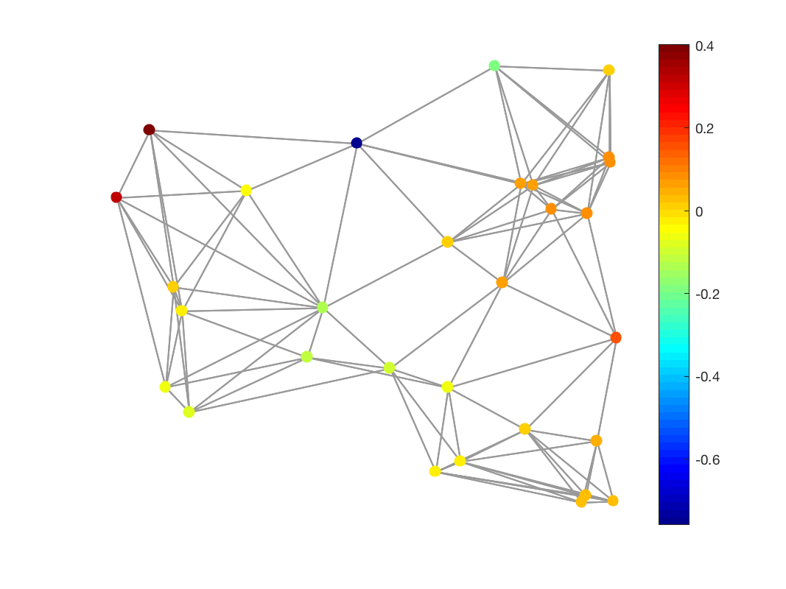

f = gsp_igft(G,f_hat);
| G | Graph or Fourier basis |
| f_hat | Signal |
| f | Inverse graph Fourier transform of f_hat |
'gsp_igft(G,f_hat)' computes a graph Fourier transform of the signal f_hat with respect to the Fourier basis of the graph G: G.U. Alternatively, one can provide directly the Fourier basis instead of the graph G.
To compute the Fourier basis of a graph G, you can use the function:
G = gsp_compute_fourier_basis(G);
Example:
N = 30; G = gsp_sensor(N); G = gsp_compute_fourier_basis(G); f_hat = zeros(N,1); f_hat(5) = 1; f = gsp_igft(G,f_hat); gsp_plot_signal(G,f);